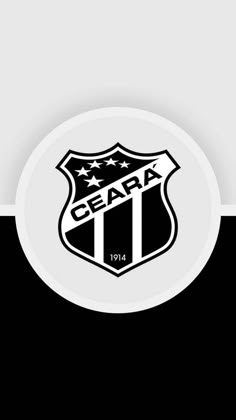

O MAIOR
CEARÁ SPORT CLUB
O MAIOR DO NORDESTE
O melhor time da região nordeste

Site oficial do Ceará SC
Curiosidades sobre o Ceará SC:
- Fundado em 2 de junho de 1914
- Seu mascote é o alvinegro cearense
- Seu maior rival é o Fortaleza EC
- Seu estádio é o Castelão, com capacidade para mais de 60 mil torcedores
Por que o Ceará SC é o maior do nordeste?
- maior que o fortaleza
- maior campeão do campeonato cearense
- maior campeão do nordeste entre ceará e fortaleza
| Títulos |
Quantidade |
| Campeonato Cearense: |
47 |
| Copa do Nordeste: |
3 |